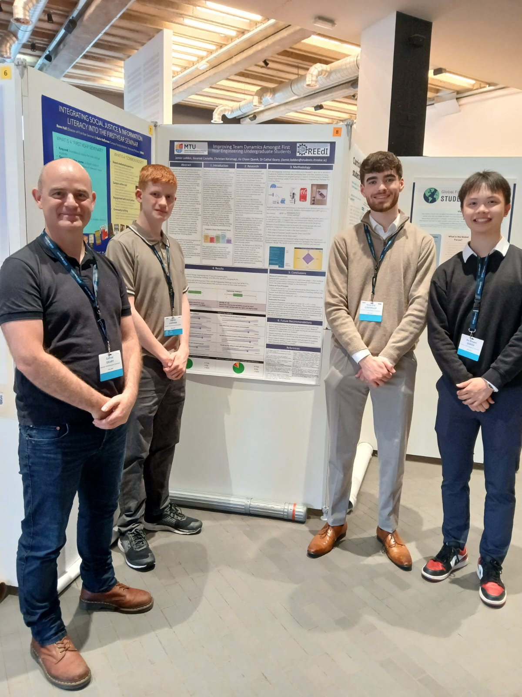

Project Overview
Project Background
The SparkPlus Project was a multidisciplinary, student-led initiative designed to enhance team dynamics, accountability, and soft skill development among first-year engineering students. By combining the Tuckman model of team development with structured peer assessment via SparkPlus, the project provided a scaffolded learning experience that encouraged reflection, collaboration, and communication. A major component of the initiative involved running a series of interactive and engaging workshops to introduce students to the SparkPlus platform and teamwork strategies. These sessions included hands-on activities such as the Tower of Hanoi game and reflective group discussions. The project gained international visibility and was presented at a prestigious conference in KU Leuven, Belgium, highlighting its impact and scalability.
Key Features
- Structured around Tuckman’s model (Forming, Storming, Norming, Performing)
- Delivered a series of interactive workshops to build teamwork and reflection skills
- Facilitated reflective practice sessions after each assessment round
- Improved team performance indicators: reduced contribution variability, improved conflict resolution, and communication
- Presented the project at KU Leuven, Belgium, showcasing its international relevance